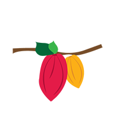

<!doctype html>
<html lang="en" ng-app="myApp">
<head>
  <meta charset="utf-8">
  <title>Edo State Agric Map</title>
  <link rel="stylesheet" href="css/style.css"/>
</head>

<body>
	<div class="wrapper">

		<aside class="feature">
		
<div class="titl"> <h2>Edo State Crop </br> Cultivation Areas</h2></div>

			<div class="app_description">
			<b>This interactive map shows arable crop lands by LGA and points of interest in Edo State, Nigeria.</b>
</br>
</br>
Select one of 6 crops to begin exploring Edo's agricultural assets.
			</div>

			<table class="crops">
				<tr>
					<td><a href="#/sugarcane" >sugarcane</a></td>
					<td><a href="#/cocoa" ></br>cocoa</a></td>
				</tr>
				<tr>
					<td><a href="#/oilpalm" ></br>oil palm</a></td>
					<td><a href="#/grains"> </br>grains</a></td>
				</tr>
				<tr>
					<td><a href="#/cassava" ></br>cassava</a></td>
					<td><a href="#/rubber"></br>rubber</a></td>
				</tr>

			</table>

			<div class="desc_footer">
This application was created by the Edo State ICT Agency's Open Data team using data from the Ministry of Agriculture and Natural resources and the Public Private Partnership (PPP) Office.
			</div>	

		</aside>
            <section class="map_section" style="display: block;" ng-view>
                
            </section>  


  <!-- In production use:
  <script src="//ajax.googleapis.com/ajax/libs/angularjs/1.0.7/angular.min.js"></script>
  -->
  <script src="lib/angular/angular.js"></script>
  <script src="js/app.js"></script>
  <script src="js/services.js"></script>
  <script src="js/controllers.js"></script>
  <script src="js/filters.js"></script>
  <script src="js/directives.js"></script>
</div>

</body>
</html>
